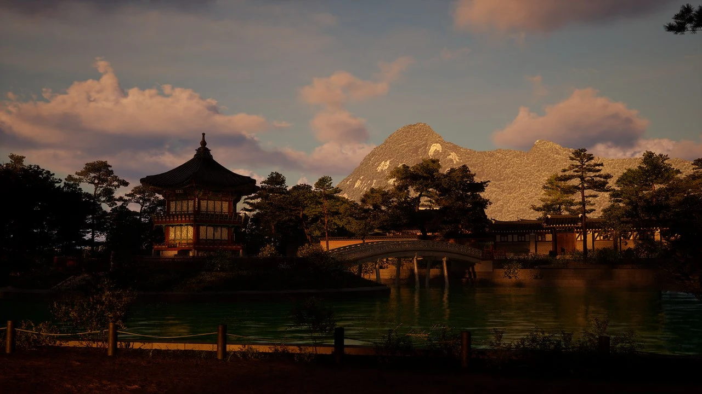
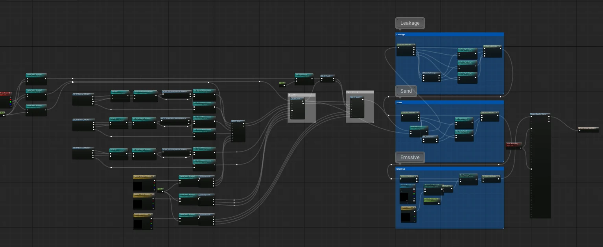

모듈식 마스터 머티리얼


대전 에셋사업의 경복궁과 국회의사당 환경을 제작하면서 사용할 머티리얼 시스템을 만들었다. 반복해서 쓰는 표면 효과를 Material Function으로 나누고 플러그인으로 묶었다. 필요한 기능을 조합해 각 환경에 사용할 수 있도록 구성했다.
효과를 조합하는 구조#
World-Aligned 투영을 바탕으로 Vertex Color가 제어하는 레이어를 얹고, Dirt·Sand·Moss·Leakage 효과를 조합했다. Snow·Leaves 축적은 Z 마스크로 처리했다.


각 효과를 개별 Material Function으로 분리하고 Function Library를 플러그인으로 패키징했다. 반복해서 쓰는 기능을 다음 프로젝트로 옮길 수 있는 단위로 만든 것이다.
아티스트가 선택할 값#
표면마다 필요한 투영 방식이 다르다. 일반 UV와 World-Aligned를 선택할 수 있게 하고, World-Aligned 안에서도 XYZ와 XY 축 선택을 나눴다.
| 제어 항목 | 노출한 선택 |
|---|---|
| 텍스처 투영 | 일반 UV / World-Aligned |
| 투영 축 | XYZ / XY |
| 레이어 속성 | 상수값 / 텍스처 |
| 전역 환경 | MPC를 통한 계절·날씨·시간·눈 높이·바람 강도 |
컬러·메탈릭·UV 타일링·러프니스는 레이어마다 조절하도록 했다. 내부 블렌딩 연산과 노이즈 파라미터는 숨기고 결과를 판단하는 데 필요한 값을 남겼다.
기능을 끄는 것과 순열을 줄이는 것#
주요 기능에는 Static Switch Parameter를 사용했다. 꺼둔 기능은 컴파일 단계에서 빠지지만, 실제로 쓰는 스위치 조합마다 별도의 셰이더 맵이 만들어진다.
런타임 비용과 컴파일·쿡 시간, 셰이더 메모리는 같은 문제가 아니다. 기능을 켜는 조합을 관리하고, 사용하지 않는 Used with 설정을 점검해야 한다. 런타임에 바뀌는 계절과 날씨는 MPC로 제어했다.
통합의 경계#
통합하면 관리와 재사용은 편해지지만 단순한 표면에 불필요한 비용이 남을 수 있다. 바닥처럼 위를 향하는 표면에는 일반 UV가 적합하고, UV를 펴기 어려운 벽이나 바위에는 World-Aligned가 유용하다.
기존 케이스에서는 Platform Stats로 기능별 instruction과 텍스처 읽기 횟수를 비교했다. 다만 instruction 수는 실제 GPU 시간과 같지 않다. 이 소개에서는 그 수치를 프레임 성능 개선으로 환산하지 않는다.
적용 규모와 셰이더 비용#
제출한 포트폴리오의 경복궁 환경 기록에서 새로 설계한 마스터 10종은 인스턴스 1,049개와 고유 메시 799종에 사용됐다. 그중 한 마스터가 인스턴스 313개, 고유 메시 459종, 씬 배치 12,473개를 담당했다. 이는 전체 씬에 존재하는 모든 마스터의 합계가 아니다.
DirectX SM6의 Platform Stats에서 기능 조건을 비교했다. 베이스는 Vertex Blending A 레이어만 켠 상태다.
| 조건 | Pixel Instructions | Texture Lookup (PS) |
|---|---|---|
| Base | 558 | 24 |
| Vertex Blending A+B+C | 850 | 23 |
| Leakage | 1,046 | 29 |
| Sand | 1,109 | 33 |
| World-Aligned XY | 971 | 47 |
| World-Aligned XYZ | 1,075 | 59 |
| 전 기능 활성 | 2,495 | 61 |
투영을 XYZ에서 XY로 바꾸면 이 조건에서 104 instructions와 텍스처 읽기 12회가 줄었다. instruction 수는 GPU 실행 시간이 아니다. 화면 점유율과 실제 패스 비용까지 측정해야 프레임에 미치는 영향을 판단할 수 있다. 위 수치는 제출 자료의 기록을 옮긴 것이며 이번 홈페이지 작업에서 재측정하지 않았다.
다음 확인#
표면별 투영 경로 선택 규칙, Used with 사용처 점검, 실제 GPU 시간 측정이 후속 작업으로 남아 있다. 이미 있는 기능을 어떤 기준으로 쓰는지 문서화하는 것이 다음 과제다.